CODING AGENTS AS PIXEL WORLD MODELS
traex/DeepSeek-V4.1-Flash · common50_0037
点击播放 · 原生 RGB 像素
逐轮保存的候选
回放视频、检查图与代码变化。
每份候选均可单独播放。实际图片检查记录在下方工具轨迹中。
候选 01播放与检查图
点击播放 · 原生 RGB 像素
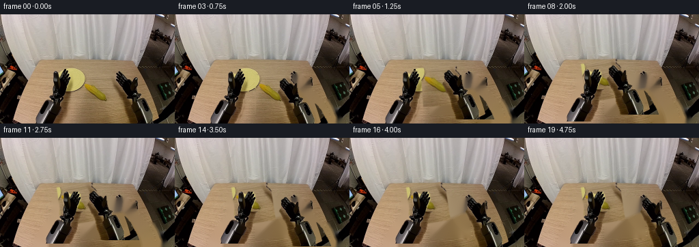
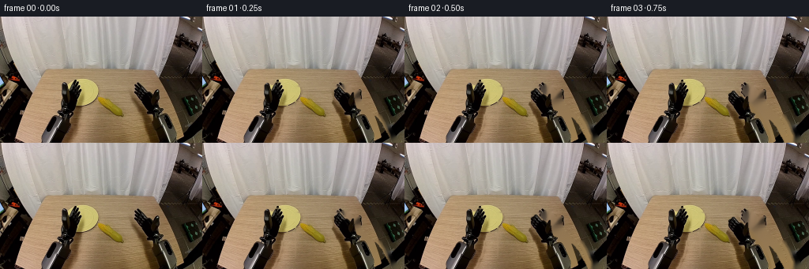
展开代码变化
--- 上一保存版本
+++ 本次保存版本
@@ -0,0 +1,221 @@
+from pathlib import Path
+
+import cv2
+import numpy as np
+
+import artifact_io
+
+
+ROOT = Path(__file__).resolve().parent
+WIDTH, HEIGHT = 256, 160
+N_FRAMES = 20
+
+
+def _largest_filled_component(mask):
+ count, labels, stats, _ = cv2.connectedComponentsWithStats(mask)
+ if count <= 1:
+ return np.zeros_like(mask)
+ index = 1 + int(np.argmax(stats[1:, cv2.CC_STAT_AREA]))
+ component = (labels == index).astype(np.uint8) * 255
+ contours, _ = cv2.findContours(
+ component, cv2.RETR_EXTERNAL, cv2.CHAIN_APPROX_SIMPLE
+ )
+ filled = np.zeros_like(component)
+ cv2.drawContours(filled, contours, -1, 255, -1)
+ return filled
+
+
+def _segment_foreground(image):
+ hsv = cv2.cvtColor(image, cv2.COLOR_BGR2HSV)
+ height, width = image.shape[:2]
+
+ left_polygon = np.array(
+ [
+ [51, 159], [52, 126], [60, 111], [72, 100], [76, 90],
+ [81, 84], [102, 84], [104, 101], [104, 109], [111, 111],
+ [116, 122], [122, 159],
+ ],
+ np.int32,
+ )
+ right_polygon = np.array(
+ [
+ [167, 159], [167, 121], [170, 108], [173, 101], [173, 92],
+ [180, 87], [192, 85], [196, 96], [197, 106], [200, 115],
+ [210, 119], [219, 119], [231, 133], [245, 159],
+ ],
+ np.int32,
+ )
+
+ def robot_mask(polygon):
+ zone = np.zeros((height, width), np.uint8)
+ cv2.fillPoly(zone, [polygon], 255)
+ dark_neutral = (
+ ((hsv[:, :, 1] < 82) & (hsv[:, :, 2] < 200))
+ | (hsv[:, :, 2] < 105)
+ )
+ mask = (dark_neutral & (zone > 0)).astype(np.uint8) * 255
+ mask = cv2.morphologyEx(mask, cv2.MORPH_CLOSE, np.ones((5, 5), np.uint8))
+
+ count, labels, stats, _ = cv2.connectedComponentsWithStats(mask)
+ cleaned = np.zeros_like(mask)
+ for index in range(1, count):
+ if stats[index, cv2.CC_STAT_AREA] >= 24:
+ cleaned[labels == index] = 255
+ cleaned = cv2.morphologyEx(
+ cleaned, cv2.MORPH_CLOSE, np.ones((3, 3), np.uint8)
+ )
+ return cv2.dilate(cleaned, np.ones((2, 2), np.uint8), iterations=1)
+
+ corn_zone = np.zeros((height, width), np.uint8)
+ corn_zone[90:145, 120:175] = 255
+ corn_seed = (
+ (hsv[:, :, 0] >= 12)
+ & (hsv[:, :, 0] <= 32)
+ & (hsv[:, :, 1] >= 78)
+ & (hsv[:, :, 2] >= 45)
+ & (corn_zone > 0)
+ ).astype(np.uint8) * 255
+ corn_seed = cv2.morphologyEx(
+ corn_seed, cv2.MORPH_CLOSE, np.ones((5, 5), np.uint8)
+ )
+ corn_mask = _largest_filled_component(corn_seed)
+ corn_mask = cv2.dilate(corn_mask, np.ones((3, 3), np.uint8), iterations=1)
+
+ return robot_mask(left_polygon), robot_mask(right_polygon), corn_mask
+
+
+def _rgba_layer(image, mask):
+ alpha = cv2.GaussianBlur(mask, (3, 3), 0.55).astype(np.float32) / 255.0
+ return image.astype(np.float32), alpha
+
+
+def _transform_layer(layer, matrix):
+ rgb, alpha = layer
+ warped_rgb = cv2.warpAffine(
+ rgb,
+ matrix,
+ (WIDTH, HEIGHT),
+ flags=cv2.INTER_LINEAR,
+ borderMode=cv2.BORDER_CONSTANT,
+ borderValue=0,
+ )
+ warped_alpha = cv2.warpAffine(
+ alpha,
+ matrix,
+ (WIDTH, HEIGHT),
+ flags=cv2.INTER_LINEAR,
+ borderMode=cv2.BORDER_CONSTANT,
+ borderValue=0,
+ )
+ return warped_rgb, warped_alpha
+
+
+def _translation(dx, dy):
+ return np.array([[1.0, 0.0, dx], [0.0, 1.0, dy]], np.float32)
+
+
+def _sample_keys(frame, keys):
+ if frame <= keys[0][0]:
+ return np.asarray(keys[0][1:], np.float32)
+ for (f0, *v0), (f1, *v1) in zip(keys[:-1], keys[1:]):
+ if f0 <= frame <= f1:
+ t = (frame - f0) / float(f1 - f0)
+ t = t * t * (3.0 - 2.0 * t)
+ return np.asarray(v0, np.float32) * (1.0 - t) + np.asarray(v1, np.float32) * t
+ return np.asarray(keys[-1][1:], np.float32)
+
+
+def main():
+ source = cv2.imread(str(ROOT / "first_frame.png"), cv2.IMREAD_COLOR)
+ if source is None or source.shape != (HEIGHT, WIDTH, 3):
+ raise ValueError("first_frame.png must be a 256x160 RGB image")
+
+ left_mask, right_mask, corn_mask = _segment_foreground(source)
+ removal_mask = cv2.dilate(
+ np.maximum(np.maximum(left_mask, right_mask), corn_mask),
+ np.ones((5, 5), np.uint8),
+ iterations=1,
+ )
+ background_bgr = cv2.inpaint(source, removal_mask, 5, cv2.INPAINT_TELEA)
+
+ left_layer = _rgba_layer(source, left_mask)
+ right_layer = _rgba_layer(source, right_mask)
+ corn_layer = _rgba_layer(source, corn_mask)
+ moments = cv2.moments(corn_mask)
+ corn_center = (
+ moments["m10"] / moments["m00"],
+ moments["m01"] / moments["m00"],
+ )
+
+ right_keys = [
+ (0, 0.0, 0.0),
+ (1, -6.0, 1.0),
+ (2, -13.0, 3.0),
+ (3, -19.0, 6.0),
+ (4, -26.0, 1.0),
+ (5, -34.0, -6.0),
+ (6, -42.0, -11.0),
+ (7, -49.0, -13.0),
+ (10, -49.0, -13.0),
+ (11, -42.0, -10.0),
+ (12, -34.0, -6.0),
+ (13, -26.0, -3.0),
+ (14, -17.0, -1.0),
+ (15, -9.0, 0.0),
+ (16, 0.0, 0.0),
+ (19, 0.0, 0.0),
+ ]
+ left_keys = [
+ (0, 0.0, 0.0),
+ (6, 0.0, 0.0),
+ (7, 4.0, -1.0),
+ (8, 10.0, -3.0),
+ (9, 15.0, -5.0),
+ (19, 15.0, -5.0),
+ ]
+ corn_keys = [
+ (0, 0.0, 0.0, 0.0),
+ (3, 0.0, 0.0, 0.0),
+ (4, -4.0, -5.0, 2.0),
+ (5, -13.0, -12.0, 4.0),
+ (6, -24.0, -18.0, 7.0),
+ (7, -32.0, -21.0, 9.0),
+ (19, -32.0, -21.0, 9.0),
+ ]
+
+ frames = np.empty((N_FRAMES, HEIGHT, WIDTH, 3), np.uint8)
+ frames[0] = source[:, :, ::-1]
+
+ for frame_index in range(1, N_FRAMES):
+ canvas = background_bgr.astype(np.float32)
+
+ corn_dx, corn_dy, corn_angle = _sample_keys(frame_index, corn_keys)
+ corn_matrix = cv2.getRotationMatrix2D(
+ corn_center, float(corn_angle), 1.0
+ )
+ corn_matrix[0, 2] += float(corn_dx)
+ corn_matrix[1, 2] += float(corn_dy)
+ corn_rgb, corn_alpha = _transform_layer(corn_layer, corn_matrix)
+ canvas = canvas * (1.0 - corn_alpha[:, :, None]) + corn_rgb * corn_alpha[:, :, None]
+
+ for layer, keys in ((left_layer, left_keys), (right_layer, right_keys)):
+ dx, dy = _sample_keys(frame_index, keys)
+ arm_rgb, arm_alpha = _transform_layer(
+ layer, _translation(float(dx), float(dy))
+ )
+ canvas = canvas * (1.0 - arm_alpha[:, :, None]) + arm_rgb * arm_alpha[:, :, None]
+
+ frames[frame_index] = np.clip(canvas[:, :, ::-1], 0, 255).astype(np.uint8)
+
+ if not np.array_equal(frames[0], source[:, :, ::-1]):
+ raise AssertionError("frame 00 must match first_frame.png exactly")
+
+ cv2.imwrite(str(ROOT / "background.png"), background_bgr)
+ cv2.imwrite(str(ROOT / "left_foreground.png"), source * (left_mask[:, :, None] > 0))
+ cv2.imwrite(str(ROOT / "right_foreground.png"), source * (right_mask[:, :, None] > 0))
+ cv2.imwrite(str(ROOT / "corn_foreground.png"), source * (corn_mask[:, :, None] > 0))
+ artifact_io.save(frames, ROOT)
+
+
+if __name__ == "__main__":
+ main()
候选 02播放与检查图
点击播放 · 原生 RGB 像素

展开代码变化
--- 上一保存版本
+++ 本次保存版本
@@ -31,16 +31,16 @@
left_polygon = np.array(
[
- [51, 159], [52, 126], [60, 111], [72, 100], [76, 90],
- [81, 84], [102, 84], [104, 101], [104, 109], [111, 111],
- [116, 122], [122, 159],
+ [51, 159], [52, 127], [61, 112], [74, 100], [77, 91],
+ [82, 85], [101, 85], [103, 101], [103, 109], [110, 111],
+ [115, 122], [121, 159],
],
np.int32,
)
right_polygon = np.array(
[
- [167, 159], [167, 121], [170, 108], [173, 101], [173, 92],
- [180, 87], [192, 85], [196, 96], [197, 106], [200, 115],
+ [168, 159], [168, 122], [171, 109], [174, 102], [174, 93],
+ [181, 88], [191, 86], [195, 96], [196, 106], [199, 115],
[210, 119], [219, 119], [231, 133], [245, 159],
],
np.int32,
@@ -50,36 +50,26 @@
zone = np.zeros((height, width), np.uint8)
cv2.fillPoly(zone, [polygon], 255)
dark_neutral = (
- ((hsv[:, :, 1] < 82) & (hsv[:, :, 2] < 200))
- | (hsv[:, :, 2] < 105)
- )
- mask = (dark_neutral & (zone > 0)).astype(np.uint8) * 255
- mask = cv2.morphologyEx(mask, cv2.MORPH_CLOSE, np.ones((5, 5), np.uint8))
-
- count, labels, stats, _ = cv2.connectedComponentsWithStats(mask)
- cleaned = np.zeros_like(mask)
- for index in range(1, count):
- if stats[index, cv2.CC_STAT_AREA] >= 24:
- cleaned[labels == index] = 255
- cleaned = cv2.morphologyEx(
- cleaned, cv2.MORPH_CLOSE, np.ones((3, 3), np.uint8)
- )
- return cv2.dilate(cleaned, np.ones((2, 2), np.uint8), iterations=1)
-
- corn_zone = np.zeros((height, width), np.uint8)
- corn_zone[90:145, 120:175] = 255
- corn_seed = (
- (hsv[:, :, 0] >= 12)
- & (hsv[:, :, 0] <= 32)
- & (hsv[:, :, 1] >= 78)
- & (hsv[:, :, 2] >= 45)
- & (corn_zone > 0)
- ).astype(np.uint8) * 255
- corn_seed = cv2.morphologyEx(
- corn_seed, cv2.MORPH_CLOSE, np.ones((5, 5), np.uint8)
- )
- corn_mask = _largest_filled_component(corn_seed)
- corn_mask = cv2.dilate(corn_mask, np.ones((3, 3), np.uint8), iterations=1)
+ ((hsv[:, :, 1] < 108) & (hsv[:, :, 2] < 205))
+ | (hsv[:, :, 2] < 100)
+ )
+ seed = (dark_neutral & (zone > 0)).astype(np.uint8) * 255
+ seed = cv2.morphologyEx(seed, cv2.MORPH_CLOSE, np.ones((7, 7), np.uint8))
+ contours, _ = cv2.findContours(
+ seed, cv2.RETR_EXTERNAL, cv2.CHAIN_APPROX_SIMPLE
+ )
+ filled = np.zeros_like(seed)
+ for contour in contours:
+ if cv2.contourArea(contour) > 45:
+ cv2.drawContours(filled, [contour], -1, 255, -1)
+ filled = cv2.bitwise_and(filled, zone)
+ return cv2.morphologyEx(
+ filled, cv2.MORPH_CLOSE, np.ones((3, 3), np.uint8)
+ )
+
+ corn_mask = np.zeros((height, width), np.uint8)
+ cv2.ellipse(corn_mask, (146, 120), (27, 15), 33, 0, 360, 255, -1)
+ cv2.ellipse(corn_mask, (151, 124), (20, 12), 35, 0, 360, 255, -1)
return robot_mask(left_polygon), robot_mask(right_polygon), corn_mask
@@ -149,38 +139,40 @@
right_keys = [
(0, 0.0, 0.0),
- (1, -6.0, 1.0),
- (2, -13.0, 3.0),
- (3, -19.0, 6.0),
- (4, -26.0, 1.0),
- (5, -34.0, -6.0),
- (6, -42.0, -11.0),
- (7, -49.0, -13.0),
+ (1, -4.0, 0.5),
+ (2, -9.0, 2.0),
+ (3, -15.0, 4.0),
+ (4, -22.0, 3.0),
+ (5, -30.0, -3.0),
+ (6, -38.0, -9.0),
+ (7, -45.0, -13.0),
(10, -49.0, -13.0),
- (11, -42.0, -10.0),
- (12, -34.0, -6.0),
- (13, -26.0, -3.0),
- (14, -17.0, -1.0),
- (15, -9.0, 0.0),
+ (11, -43.0, -10.0),
+ (12, -36.0, -7.0),
+ (13, -28.0, -4.0),
+ (14, -19.0, -2.0),
+ (15, -10.0, 0.0),
(16, 0.0, 0.0),
(19, 0.0, 0.0),
]
left_keys = [
(0, 0.0, 0.0),
(6, 0.0, 0.0),
- (7, 4.0, -1.0),
- (8, 10.0, -3.0),
- (9, 15.0, -5.0),
+ (7, 3.0, -1.0),
+ (8, 8.0, -2.5),
+ (9, 13.0, -4.0),
+ (10, 15.0, -5.0),
(19, 15.0, -5.0),
]
corn_keys = [
(0, 0.0, 0.0, 0.0),
- (3, 0.0, 0.0, 0.0),
- (4, -4.0, -5.0, 2.0),
- (5, -13.0, -12.0, 4.0),
- (6, -24.0, -18.0, 7.0),
- (7, -32.0, -21.0, 9.0),
- (19, -32.0, -21.0, 9.0),
+ (2, 0.0, 0.0, 0.0),
+ (3, -2.0, -3.0, 1.0),
+ (4, -7.0, -8.0, 3.0),
+ (5, -16.0, -14.0, 5.0),
+ (6, -25.0, -18.0, 7.0),
+ (7, -31.0, -20.0, 9.0),
+ (19, -31.0, -20.0, 9.0),
]
frames = np.empty((N_FRAMES, HEIGHT, WIDTH, 3), np.uint8)
候选 03播放与检查图
候选 04播放与检查图
点击播放 · 原生 RGB 像素

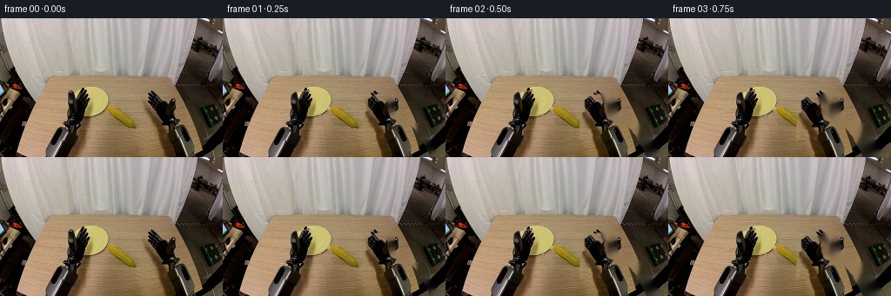
展开代码变化
--- 上一保存版本
+++ 本次保存版本
@@ -139,40 +139,43 @@
right_keys = [
(0, 0.0, 0.0),
- (1, -4.0, 0.5),
- (2, -9.0, 2.0),
- (3, -15.0, 4.0),
- (4, -22.0, 3.0),
- (5, -30.0, -3.0),
- (6, -38.0, -9.0),
- (7, -45.0, -13.0),
- (10, -49.0, -13.0),
- (11, -43.0, -10.0),
- (12, -36.0, -7.0),
- (13, -28.0, -4.0),
- (14, -19.0, -2.0),
- (15, -10.0, 0.0),
- (16, 0.0, 0.0),
+ (1, -7.0, 0.0),
+ (2, -14.0, 1.0),
+ (3, -21.0, 2.0),
+ (4, -28.0, 3.0),
+ (5, -35.0, 4.0),
+ (6, -43.0, 2.0),
+ (7, -51.0, 0.0),
+ (8, -59.0, -1.0),
+ (9, -67.0, -2.0),
+ (10, -78.0, -3.0),
+ (11, -78.0, -3.0),
+ (12, -70.0, -2.5),
+ (13, -60.0, -2.0),
+ (14, -48.0, -1.5),
+ (15, -34.0, -1.0),
+ (16, -18.0, -0.5),
+ (17, 0.0, 0.0),
(19, 0.0, 0.0),
]
left_keys = [
(0, 0.0, 0.0),
(6, 0.0, 0.0),
- (7, 3.0, -1.0),
- (8, 8.0, -2.5),
- (9, 13.0, -4.0),
- (10, 15.0, -5.0),
- (19, 15.0, -5.0),
+ (7, 3.0, -0.5),
+ (8, 6.0, -1.0),
+ (9, 10.0, -1.5),
+ (10, 15.0, -2.0),
+ (19, 15.0, -2.0),
]
corn_keys = [
(0, 0.0, 0.0, 0.0),
- (2, 0.0, 0.0, 0.0),
- (3, -2.0, -3.0, 1.0),
- (4, -7.0, -8.0, 3.0),
- (5, -16.0, -14.0, 5.0),
- (6, -25.0, -18.0, 7.0),
- (7, -31.0, -20.0, 9.0),
- (19, -31.0, -20.0, 9.0),
+ (5, 0.0, 0.0, 0.0),
+ (6, -8.0, -2.0, 2.0),
+ (7, -16.0, -4.0, 4.0),
+ (8, -24.0, -5.0, 6.0),
+ (9, -32.0, -6.0, 8.0),
+ (10, -43.0, -7.0, 9.0),
+ (19, -43.0, -7.0, 9.0),
]
frames = np.empty((N_FRAMES, HEIGHT, WIDTH, 3), np.uint8)
候选 05播放与检查图
点击播放 · 原生 RGB 像素
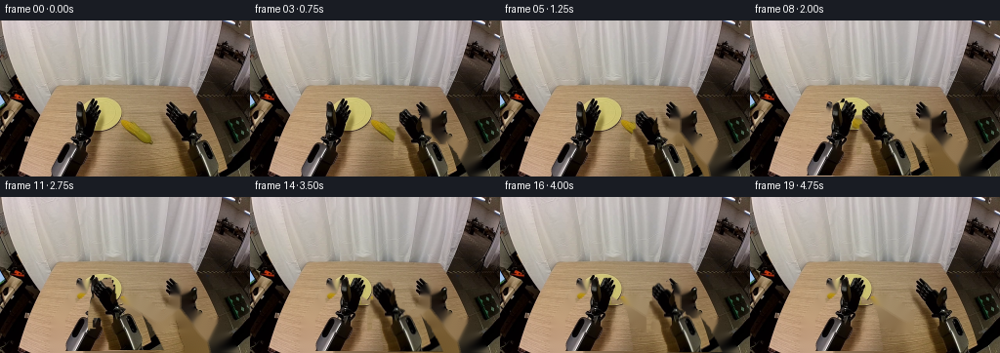
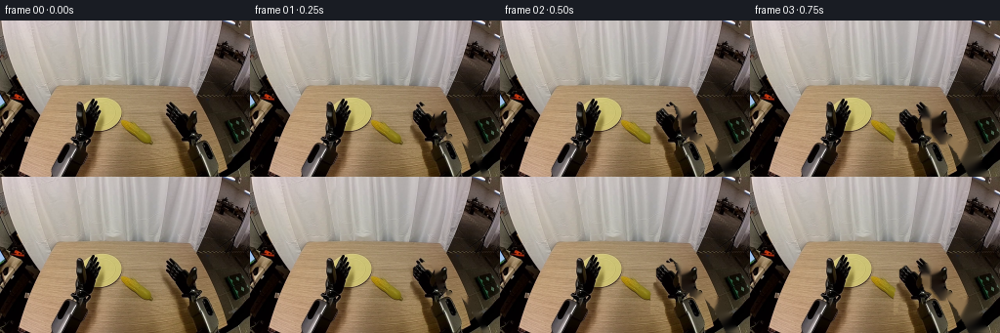
展开代码变化
--- 上一保存版本
+++ 本次保存版本
@@ -121,16 +121,13 @@
raise ValueError("first_frame.png must be a 256x160 RGB image")
left_mask, right_mask, corn_mask = _segment_foreground(source)
- removal_mask = cv2.dilate(
- np.maximum(np.maximum(left_mask, right_mask), corn_mask),
- np.ones((5, 5), np.uint8),
- iterations=1,
- )
- background_bgr = cv2.inpaint(source, removal_mask, 5, cv2.INPAINT_TELEA)
-
- left_layer = _rgba_layer(source, left_mask)
- right_layer = _rgba_layer(source, right_mask)
- corn_layer = _rgba_layer(source, corn_mask)
+ removal_mask = np.maximum(np.maximum(left_mask, right_mask), corn_mask)
+ background_bgr = cv2.inpaint(source, removal_mask, 3, cv2.INPAINT_TELEA)
+
+ edge_dilated = cv2.dilate(removal_mask, np.ones((3, 3), np.uint8), iterations=1)
+ left_layer = _rgba_layer(source, edge_dilated & ((left_mask > 0).astype(np.uint8) * 255))
+ right_layer = _rgba_layer(source, edge_dilated & ((right_mask > 0).astype(np.uint8) * 255))
+ corn_layer = _rgba_layer(source, edge_dilated & ((corn_mask > 0).astype(np.uint8) * 255))
moments = cv2.moments(corn_mask)
corn_center = (
moments["m10"] / moments["m00"],
可观测工具轨迹
实际执行的命令与返回图片。
命令 1exit 0
/bin/bash -c "pwd && rg --files -g 'prompt.txt' -g 'GENERATION_RULES.md' -g '"'!*.mp4'"' -g '"'!*.mov'"' | sort"
命令 2exit 0
/bin/bash -c "find . -maxdepth 2 -type f -printf '%p\\n' | sort | head -200"
命令 3exit 0
/bin/bash -c 'git status --short && git log -5 --oneline --decorate'
命令 4exit 0
/bin/bash -c 'cat GENERATION_RULES.md'
命令 5exit 0
/bin/bash -c 'cat prompt.txt'
命令 6exit 0
/bin/bash -c 'cat task_spec.json'
命令 7exit 0
/bin/bash -c "sed -n '1,240p' artifact_io.py"
命令 8exit 0
/bin/bash -c "python - <<'PY'
import importlib.util
for m in ['numpy','PIL','cv2','scipy','skimage','imageio','torch']:
print(m, bool(importlib.util.find_spec(m)))
PY"命令 9exit 0
/bin/bash -c "python - <<'PY'
from PIL import Image
im=Image.open('first_frame.png')
print(im.size, im.mode)
PY"命令 10exit 0
/bin/bash -c "python - <<'PY'
from PIL import Image
im=Image.open('first_frame.png')
im.crop((70,65,170,140)).resize((800,600)).save('scene_crop.png')
PY"命令 11exit 0
/bin/bash -c "python - <<'PY'
import cv2, numpy as np
from PIL import Image
im=cv2.imread('first_frame.png')
g=cv2.cvtColor(im,cv2.COLOR_BGR2GRAY)
# threshold dark elements in arm zones
for name,(x0,x1) in {'left':(50,125),'right':(165,256)}.items():
roi=g[75:160,x0:x1]
m=(roi<105).astype(np.uint8)*255
m=cv2.morphologyEx(m,cv2.MORPH_CLOSE,np.ones((3,3),np.uint8))
n,lab,stats,cents=cv2.connectedComponentsWithStats(m)
order=np.argsort(stats[1:,cv2.CC_STAT_AREA])[::-1][:8]+1
print(name,[(int(stats[i,4]), tuple(map(int,stats[i,:4]))) for i in order])
vis=np.zeros_like(roi); vis[m>0]=255
cv2.imwrite(f'{name}_darkmask.png',vis)
PY"命令 12exit 0
/bin/bash -c "python - <<'PY'
from PIL import Image, ImageDraw, ImageFont
im=Image.open('first_frame.png').resize((1024,640),Image.Resampling.NEAREST)
d=ImageDraw.Draw(im)
for x in range(0,257,10):
X=x*4
d.line((X,0,X,640),fill=(255,0,0),width=1)
if x%20==0:d.text((X+2,2),str(x),fill=(255,255,255))
for y in range(0,161,10):
Y=y*4
d.line((0,Y,1024,Y),fill=(255,0,0),width=1)
if y%20==0:d.text((2,Y+2),str(y),fill=(255,255,255))
im.save('grid.png')
PY"命令 13exit 0
/bin/bash -c "python - <<'PY'
import cv2,numpy as np
im=cv2.imread('first_frame.png')
g=cv2.cvtColor(im,cv2.COLOR_BGR2GRAY)
hsv=cv2.cvtColor(im,cv2.COLOR_BGR2HSV)
polys={
'L':np.array([[52,159],[53,126],[61,112],[74,100],[77,91],[82,85],[101,85],[103,101],[103,109],[110,111],[115,122],[121,159]],np.int32),
'R':np.array([[168,159],[168,122],[171,109],[174,102],[174,93],[181,88],[191,86],[195,96],[196,106],[199,115],[209,119],[218,119],[230,133],[244,159]],np.int32)
}
for name,p in polys.items():
m=np.zeros(g.shape,np.uint8); cv2.fillPoly(m,[p],255)
out=im.copy(); out[m==0]=(0,0,0)
cv2.imwrite(f'{name}_poly.png',out)
for t in [100,120,140,155,170]:
mm=((g<t)&(m>0)).astype(np.uint8)*255
mm=cv2.morphologyEx(mm,cv2.MORPH_CLOSE,np.ones((3,3),np.uint8))
cv2.imwrite(f'{name}_mask_{t}.png',mm)
PY"命令 14exit 0
/bin/bash -c "python - <<'PY'
import cv2,numpy as np
im=cv2.imread('first_frame.png')
g=cv2.cvtColor(im,cv2.COLOR_BGR2GRAY)
hsv=cv2.cvtColor(im,cv2.COLOR_BGR2HSV)
# sat or gray dark masks
for name in ['L','R']:
p=np.loadtxt('/dev/null') if False else None
PY"命令 15exit 0
/bin/bash -c "python - <<'PY'
import cv2,numpy as np
im=cv2.imread('first_frame.png'); hsv=cv2.cvtColor(im,cv2.COLOR_BGR2HSV); g=cv2.cvtColor(im,cv2.COLOR_BGR2GRAY)
polys={'L':np.array([[52,159],[53,126],[61,112],[74,100],[77,91],[82,85],[101,85],[103,101],[103,109],[110,111],[115,122],[121,159]],np.int32),'R':np.array([[168,159],[168,122],[171,109],[174,102],[174,93],[181,88],[191,86],[195,96],[196,106],[199,115],[209,119],[218,119],[230,133],[244,159]],np.int32)}
for name,p in polys.items():
m=np.zeros(g.shape,np.uint8); cv2.fillPoly(m,[p],255)
mask=((hsv[:,:,1]<75)&(g<185)&(m>0)).astype(np.uint8)*255
mask=cv2.morphologyEx(mask,cv2.MORPH_CLOSE,np.ones((3,3),np.uint8))
n,lab,stats,c=cv2.connectedComponentsWithStats(mask)
keep=np.zeros_like(mask)
for i in range(1,n):
if stats[i,4]>12: keep[lab==i]=255
cv2.imwrite(name+'_robmask.png',keep)
out=im.copy(); out[keep==0]=0; cv2.imwrite(name+'_robcut.png',out)
PY"命令 16exit 0
/bin/bash -c "python - <<'PY'
import cv2, numpy as np
im=cv2.imread('first_frame.png')
hsv=cv2.cvtColor(im,cv2.COLOR_BGR2HSV)
g=cv2.cvtColor(im,cv2.COLOR_BGR2GRAY)
# inspect representative corn pixels and bounding
m=(hsv[:,:,0]>15)&(hsv[:,:,0]<40)&(hsv[:,:,1]>90)&(hsv[:,:,2]>70)
ys,xs=np.where(m)
print(xs.min(),xs.max(),ys.min(),ys.max(),len(xs))
for x,y in [(134,117),(140,120),(149,127),(157,133),(128,113),(162,134)]:print(x,y,im[y,x],hsv[y,x])
PY"命令 17exit 0
/bin/bash -c "python - <<'PY'
import cv2,numpy as np
im=cv2.imread('first_frame.png'); hsv=cv2.cvtColor(im,cv2.COLOR_BGR2HSV)
roi=np.zeros(im.shape[:2],np.uint8); roi[90:145,115:175]=255
m=((hsv[:,:,0]>13)&(hsv[:,:,0]<30)&(hsv[:,:,1]>60)&(hsv[:,:,2]>60)&(roi>0)).astype(np.uint8)*255
m=cv2.morphologyEx(m,cv2.MORPH_CLOSE,np.ones((3,3),np.uint8))
n,lab,stats,c=cv2.connectedComponentsWithStats(m)
print([(i,stats[i].tolist()) for i in range(1,n) if stats[i,4]>10])
# keep largest
i=1+np.argmax(stats[1:,4]); keep=(lab==i).astype(np.uint8)*255
keep=cv2.dilate(keep,np.ones((3,3),np.uint8),iterations=1)
cv2.imwrite('cornmask.png',keep)
out=im.copy(); out[keep==0]=0; cv2.imwrite('corncut.png',out)
print('area',stats[i,4], 'bbox',stats[i,:4])
PY"命令 18exit 0
/bin/bash -c "python - <<'PY'
import cv2,numpy as np
im=cv2.imread('first_frame.png'); hsv=cv2.cvtColor(im,cv2.COLOR_BGR2HSV); g=cv2.cvtColor(im,cv2.COLOR_BGR2GRAY)
roi=np.zeros(im.shape[:2],np.uint8); roi[100:145,120:175]=255
m=((hsv[:,:,0]>12)&(hsv[:,:,0]<35)&(hsv[:,:,1]>45)&(hsv[:,:,2]>55)&(roi>0)).astype(np.uint8)*255
m=cv2.morphologyEx(m,cv2.MORPH_CLOSE,np.ones((5,5),np.uint8))
n,lab,stats,c=cv2.connectedComponentsWithStats(m)
print([(i,stats[i].tolist()) for i in range(1,n) if stats[i,4]>10])
i=1+np.argmax(stats[1:,4]); keep=(lab==i).astype(np.uint8)*255
# close holes
contours,_=cv2.findContours(keep,cv2.RETR_EXTERNAL,cv2.CHAIN_APPROX_SIMPLE)
fill=np.zeros_like(keep); cv2.drawContours(fill,contours,-1,255,-1)
fill=cv2.dilate(fill,np.ones((3,3),np.uint8),iterations=1)
cv2.imwrite('cornmask.png',fill)
out=im.copy(); out[fill==0]=0; cv2.imwrite('corncut.png',out)
print('area',stats[i,4], 'bbox',stats[i,:4], 'filled',np.count_nonzero(fill))
PY"命令 19exit 0
/bin/bash -c "python - <<'PY'
import cv2,numpy as np
im=cv2.imread('first_frame.png'); hsv=cv2.cvtColor(im,cv2.COLOR_BGR2HSV)
roi=np.zeros(im.shape[:2],np.uint8); roi[90:145,120:175]=255
m=((hsv[:,:,0]>12)&(hsv[:,:,0]<38)&(hsv[:,:,1]>35)&(hsv[:,:,2]>50)&(roi>0)).astype(np.uint8)*255
m=cv2.morphologyEx(m,cv2.MORPH_CLOSE,np.ones((5,5),np.uint8))
n,lab,stats,c=cv2.connectedComponentsWithStats(m)
i=1+np.argmax(stats[1:,4]); keep=(lab==i).astype(np.uint8)*255
contours,_=cv2.findContours(keep,cv2.RETR_EXTERNAL,cv2.CHAIN_APPROX_SIMPLE)
fill=np.zeros_like(keep); cv2.drawContours(fill,contours,-1,255,-1)
fill=cv2.dilate(fill,np.ones((3,3),np.uint8),iterations=1)
cv2.imwrite('cornmask.png',fill)
out=im.copy(); out[fill==0]=0; cv2.imwrite('corncut.png',out)
print('bbox',stats[i,:4], 'filled',np.count_nonzero(fill))
PY"命令 20exit 0
/bin/bash -c "python - <<'PY'
import cv2,numpy as np
im=cv2.imread('first_frame.png'); hsv=cv2.cvtColor(im,cv2.COLOR_BGR2HSV)
# Print hue sat val along manual corn axis and rows
for y in range(103,140,4):
vals=[]
for x in range(122,172,4): vals.append((x,int(hsv[y,x,0]),int(hsv[y,x,1]),int(hsv[y,x,2])))
print(y,vals)
PY"命令 21exit 0
/bin/bash -c "python - <<'PY'
import cv2,numpy as np
im=cv2.imread('first_frame.png'); hsv=cv2.cvtColor(im,cv2.COLOR_BGR2HSV)
roi=np.zeros(im.shape[:2],np.uint8); roi[90:145,120:175]=255
m=((hsv[:,:,0]>=12)&(hsv[:,:,0]<=38)&(hsv[:,:,1]>=65)&(hsv[:,:,2]>=50)&(roi>0)).astype(np.uint8)*255
m=cv2.morphologyEx(m,cv2.MORPH_CLOSE,np.ones((3,3),np.uint8))
n,lab,stats,c=cv2.connectedComponentsWithStats(m)
i=1+np.argmax(stats[1:,4]); keep=(lab==i).astype(np.uint8)*255
contours,_=cv2.findContours(keep,cv2.RETR_EXTERNAL,cv2.CHAIN_APPROX_SIMPLE)
fill=np.zeros_like(keep); cv2.drawContours(fill,contours,-1,255,-1)
cv2.imwrite('cornmask.png',fill)
out=im.copy(); out[fill==0]=0; cv2.imwrite('corncut.png',out)
print('bbox',stats[i,:4], 'filled',np.count_nonzero(fill))
PY"命令 22exit 0
/bin/bash -c "python - <<'PY'
import cv2
im=cv2.imread('first_frame.png'); hsv=cv2.cvtColor(im,cv2.COLOR_BGR2HSV)
for p in [(70,125),(90,125),(110,125),(150,130),(175,130),(200,130),(230,145),(110,80),(160,80)]:
x,y=p;print(p,im[y,x],hsv[y,x])
PY"命令 23exit 0
/bin/bash -c "python - <<'PY'
import cv2
im=cv2.imread('first_frame.png'); hsv=cv2.cvtColor(im,cv2.COLOR_BGR2HSV)
# RGB samples
for p in [(70,125),(90,125),(110,125),(150,130),(175,130),(200,130),(230,145),(110,80),(160,80)]:
x,y=p;print(p,im[y,x][::-1],hsv[y,x])
PY"命令 24exit 0
/bin/bash -c "python - <<'PY'
import cv2,numpy as np
im=cv2.imread('first_frame.png'); hsv=cv2.cvtColor(im,cv2.COLOR_BGR2HSV)
roi=np.zeros(im.shape[:2],np.uint8); roi[90:145,120:175]=255
# color distance to corn palette (RGB 145 119 80) + saturation
rgb=im[:,:,::-1].astype(float)
target=np.array([145,119,80])
d=np.linalg.norm(rgb-target,axis=2)
m=((d<38)&(hsv[:,:,0]>=12)&(hsv[:,:,0]<=32)&(roi>0)).astype(np.uint8)*255
m=cv2.morphologyEx(m,cv2.MORPH_CLOSE,np.ones((3,3),np.uint8))
n,lab,stats,c=cv2.connectedComponentsWithStats(m)
print([(i,stats[i].tolist()) for i in range(1,n) if stats[i,4]>10])
i=1+np.argmax(stats[1:,4]); keep=(lab==i).astype(np.uint8)*255
contours,_=cv2.findContours(keep,cv2.RETR_EXTERNAL,cv2.CHAIN_APPROX_SIMPLE)
fill=np.zeros_like(keep); cv2.drawContours(fill,contours,-1,255,-1)
cv2.imwrite('cornmask.png',fill)
out=im.copy(); out[fill==0]=0; cv2.imwrite('corncut.png',out)
print('bbox',stats[i,:4], 'filled',np.count_nonzero(fill))
PY"命令 25exit 0
/bin/bash -c "python - <<'PY'
import cv2,numpy as np
im=cv2.imread('first_frame.png'); hsv=cv2.cvtColor(im,cv2.COLOR_BGR2HSV)
roi=np.zeros(im.shape[:2],np.uint8); roi[90:145,120:175]=255
# background same hue, lower saturation? corn sat generally >=100. allow
m=((hsv[:,:,0]>=12)&(hsv[:,:,0]<=32)&(hsv[:,:,1]>=78)&(hsv[:,:,2]>=45)&(roi>0)).astype(np.uint8)*255
m=cv2.morphologyEx(m,cv2.MORPH_CLOSE,np.ones((5,5),np.uint8))
n,lab,stats,c=cv2.connectedComponentsWithStats(m)
print([(i,stats[i].tolist()) for i in range(1,n) if stats[i,4]>10])
i=1+np.argmax(stats[1:,4]); keep=(lab==i).astype(np.uint8)*255
contours,_=cv2.findContours(keep,cv2.RETR_EXTERNAL,cv2.CHAIN_APPROX_SIMPLE)
fill=np.zeros_like(keep); cv2.drawContours(fill,contours,-1,255,-1)
cv2.imwrite('cornmask.png',fill)
out=im.copy(); out[fill==0]=0; cv2.imwrite('corncut.png',out)
print('bbox',stats[i,:4], 'filled',np.count_nonzero(fill))
PY"命令 26exit 0
/bin/bash -c "python - <<'PY'
import cv2,numpy as np
im=cv2.imread('first_frame.png'); hsv=cv2.cvtColor(im,cv2.COLOR_BGR2HSV)
polys={'left':np.array([[52,159],[53,126],[61,112],[74,100],[77,91],[82,85],[101,85],[103,101],[103,109],[110,111],[115,122],[121,159]],np.int32),'right':np.array([[168,159],[168,122],[171,109],[174,102],[174,93],[181,88],[191,86],[195,96],[196,106],[199,115],[209,119],[218,119],[230,133],[244,159]],np.int32)}
for name,p in polys.items():
roi=np.zeros(im.shape[:2],np.uint8);cv2.fillPoly(roi,[p],255)
base=((hsv[:,:,1]<80)&(hsv[:,:,2]<195)) | (hsv[:,:,2]<100)
m=((base)&(roi>0)).astype(np.uint8)*255
m=cv2.morphologyEx(m,cv2.MORPH_CLOSE,np.ones((5,5),np.uint8))
n,lab,stats,c=cv2.connectedComponentsWithStats(m)
keep=np.zeros_like(m)
for i in range(1,n):
if stats[i,4]>25: keep[lab==i]=255
cv2.imwrite(name+'_mask2.png',keep)
out=im.copy();out[keep==0]=0;cv2.imwrite(name+'_cut2.png',out)
print(name,[(stats[i].tolist()) for i in range(1,n) if stats[i,4]>20])
PY"命令 27exit 0
/bin/bash -c "python - <<'PY'
import cv2,numpy as np
im=cv2.imread('first_frame.png')
hsv=cv2.cvtColor(im,cv2.COLOR_BGR2HSV)
# dark foreground union: robots + corn, plus coarse zones, inpaint background
mask=np.zeros(im.shape[:2],np.uint8)
# robot polygons manually expanded
l=np.array([[51,159],[52,126],[60,111],[72,100],[76,90],[81,84],[102,84],[104,101],[104,109],[111,111],[116,122],[122,159]],np.int32)
r=np.array([[167,159],[167,121],[170,108],[173,101],[173,92],[180,87],[192,85],[196,96],[197,106],[200,115],[210,119],[219,119],[231,133],[245,159]],np.int32)
cv2.fillPoly(mask,[l,r],255)
# corn mask
roi=np.zeros(im.shape[:2],np.uint8);roi[90:145,120:175]=255
m=((hsv[:,:,0]>=12)&(hsv[:,:,0]<=32)&(hsv[:,:,1]>=78)&(hsv[:,:,2]>=45)&(roi>0)).astype(np.uint8)*255
m=cv2.morphologyEx(m,cv2.MORPH_CLOSE,np.ones((5,5),np.uint8)); n,lab,stats,c=cv2.connectedComponentsWithStats(m);i=1+np.argmax(stats[1:,4]); keep=(lab==i).astype(np.uint8)*255; contours,_=cv2.findContours(keep,cv2.RETR_EXTERNAL,cv2.CHAIN_APPROX_SIMPLE);fill=np.zeros_like(keep);cv2.drawContours(fill,contours,-1,255,-1);mask=np.maximum(mask,fill)
mask=cv2.dilate(mask,np.ones((3,3),np.uint8),iterations=1)
bg=cv2.inpaint(im,mask,5,cv2.INPAINT_TELEA)
cv2.imwrite('background.png',bg)
# save mask vis
out=im.copy();out[mask==0]=0;cv2.imwrite('foreground_union.png',out)
PY"命令 28exit 0
/bin/bash -c 'python generate.py'
命令 29exit 0
/bin/bash -c "python - <<'PY'
import cv2,numpy as np
for n in [4,7,10,13,16]:
im=cv2.imread(f'frames/{n:02d}.png')
# mean difference from background only in central/robot regions? calculate artifacts manually
print(n, im.shape, im.min(), im.max())
PY"命令 30exit 0
/bin/bash -c "python - <<'PY'
import cv2,numpy as np
im=cv2.imread('first_frame.png');hsv=cv2.cvtColor(im,cv2.COLOR_BGR2HSV)
polys={'left':np.array([[52,159],[53,126],[61,112],[74,100],[77,91],[82,85],[101,85],[103,101],[103,109],[110,111],[115,122],[121,159]],np.int32),'right':np.array([[168,159],[168,122],[171,109],[174,102],[174,93],[181,88],[191,86],[195,96],[196,106],[199,115],[209,119],[218,119],[230,133],[244,159]],np.int32)}
for name,p in polys.items():
roi=np.zeros(im.shape[:2],np.uint8);cv2.fillPoly(roi,[p],255)
base=((hsv[:,:,1]<100)&(hsv[:,:,2]<210))|(hsv[:,:,2]<115)
m=((base)&(roi>0)).astype(np.uint8)*255
m=cv2.morphologyEx(m,cv2.MORPH_CLOSE,np.ones((3,3),np.uint8))
n,lab,stats,c=cv2.connectedComponentsWithStats(m)
keep=np.zeros_like(m)
for i in range(1,n):
if stats[i,4]>12: keep[lab==i]=255
keep=cv2.morphologyEx(keep,cv2.MORPH_CLOSE,np.ones((5,5),np.uint8))
cv2.imwrite(name+'_mask3.png',keep)
out=im.copy();out[keep==0]=0;cv2.imwrite(name+'_cut3.png',out)
print(name,[(stats[i].tolist()) for i in range(1,n) if stats[i,4]>10])
PY"命令 31exit 0
/bin/bash -c "python - <<'PY' import cv2 for n in ['L_robmask','R_robmask']: im=cv2.imread(n+'.png',0); print(n, im.shape, (im>0).sum()) PY"
命令 32exit 0
/bin/bash -c "python - <<'PY' import cv2 for n in ['left_mask3','right_mask3']: im=cv2.imread(n+'.png',0); print(n,(im>0).sum()) PY"
命令 33exit 0
/bin/bash -c "python - <<'PY'
import cv2,numpy as np
im=cv2.imread('first_frame.png'); hsv=cv2.cvtColor(im,cv2.COLOR_BGR2HSV)
# refine left by polygon and seed flood, then include similar connected pixels
poly=np.array([[52,159],[53,126],[61,112],[74,100],[77,91],[82,85],[101,85],[103,101],[103,109],[110,111],[115,122],[121,159]],np.int32)
zone=np.zeros(im.shape[:2],np.uint8);cv2.fillPoly(zone,[poly],255)
# Use threshold based on local saturation/value plus dark; fill contours to include highlights within robot silhouette
m=((hsv[:,:,1]<105)&(hsv[:,:,2]<205)&(zone>0)).astype(np.uint8)*255
m=cv2.morphologyEx(m,cv2.MORPH_CLOSE,np.ones((7,7),np.uint8))
contours,_=cv2.findContours(m,cv2.RETR_EXTERNAL,cv2.CHAIN_APPROX_SIMPLE)
fill=np.zeros_like(m)
for c in contours:
if cv2.contourArea(c)>50: cv2.drawContours(fill,[c],-1,255,-1)
fill=cv2.bitwise_and(fill,zone)
cv2.imwrite('left_mask4.png',fill)
out=im.copy();out[fill==0]=0;cv2.imwrite('left_cut4.png',out)
print((fill>0).sum())
PY"命令 34exit 0
/bin/bash -c "python - <<'PY'
import cv2,numpy as np
im=cv2.imread('first_frame.png'); hsv=cv2.cvtColor(im,cv2.COLOR_BGR2HSV)
polys={'left':np.array([[52,159],[53,126],[61,112],[74,100],[77,91],[82,85],[101,85],[103,101],[103,109],[110,111],[115,122],[121,159]],np.int32),'right':np.array([[168,159],[168,122],[171,109],[174,102],[174,93],[181,88],[191,86],[195,96],[196,106],[199,115],[209,119],[218,119],[230,133],[244,159]],np.int32)}
for name,p in polys.items():
zone=np.zeros(im.shape[:2],np.uint8);cv2.fillPoly(zone,[p],255)
m=((hsv[:,:,1]<108)&(hsv[:,:,2]<205)&(zone>0)).astype(np.uint8)*255
m=cv2.morphologyEx(m,cv2.MORPH_CLOSE,np.ones((7,7),np.uint8))
contours,_=cv2.findContours(m,cv2.RETR_EXTERNAL,cv2.CHAIN_APPROX_SIMPLE)
fill=np.zeros_like(m)
for c in contours:
if cv2.contourArea(c)>45: cv2.drawContours(fill,[c],-1,255,-1)
fill=cv2.bitwise_and(fill,zone)
cv2.imwrite(name+'_mask4.png',fill)
out=im.copy();out[fill==0]=0;cv2.imwrite(name+'_cut4.png',out)
print(name,(fill>0).sum())
PY"命令 35exit 0
/bin/bash -c "python - <<'PY'
import cv2,numpy as np
im=cv2.imread('first_frame.png');hsv=cv2.cvtColor(im,cv2.COLOR_BGR2HSV)
roi=np.zeros(im.shape[:2],np.uint8);roi[95:145,115:180]=255
for hi in [21,22,23,24,25]:
m=((hsv[:,:,0]>=12)&(hsv[:,:,0]<=hi)&(hsv[:,:,1]>=75)&(hsv[:,:,2]>=40)&(roi>0)).astype(np.uint8)*255
m=cv2.morphologyEx(m,cv2.MORPH_CLOSE,np.ones((3,3),np.uint8))
n,lab,stats,c=cv2.connectedComponentsWithStats(m)
print('hi',hi,[(stats[i].tolist()) for i in range(1,n) if stats[i,4]>10])
PY"命令 36exit 0
/bin/bash -c "python - <<'PY'
import cv2,numpy as np
im=cv2.imread('first_frame.png');hsv=cv2.cvtColor(im,cv2.COLOR_BGR2HSV)
roi=np.zeros(im.shape[:2],np.uint8);roi[95:145,115:180]=255
for sat in [70,80,90,100,110]:
m=((hsv[:,:,0]>=12)&(hsv[:,:,0]<=21)&(hsv[:,:,1]>=sat)&(hsv[:,:,2]>=40)&(roi>0)).astype(np.uint8)*255
m=cv2.morphologyEx(m,cv2.MORPH_CLOSE,np.ones((3,3),np.uint8))
n,lab,stats,c=cv2.connectedComponentsWithStats(m)
print('sat',sat,[(stats[i].tolist()) for i in range(1,n) if stats[i,4]>10])
PY"命令 37exit 0
/bin/bash -c "python - <<'PY'
import cv2,numpy as np
im=cv2.imread('first_frame.png');hsv=cv2.cvtColor(im,cv2.COLOR_BGR2HSV)
# inspect full ROI color classes and corn manual polygon
roi=im[90:145,115:180]
cv2.imwrite('cornroi.png',cv2.resize(roi,(650,550),interpolation=cv2.INTER_NEAREST))
# label saturation classes in roi
for lo,hi in [(0,20),(20,50),(50,70),(70,90),(90,110),(110,130),(130,255)]:
m=((hsv[90:145,115:180,1]>=lo)&(hsv[90:145,115:180,1]<hi)).astype(np.uint8)*255
cv2.imwrite(f'corn_sat_{lo}_{hi}.png',m)
PY"命令 38exit 0
/bin/bash -c "python - <<'PY'
import cv2,numpy as np
im=cv2.imread('first_frame.png'); hsv=cv2.cvtColor(im,cv2.COLOR_BGR2HSV)
# Hand crop corn tightly then segment via GrabCut
mask=np.zeros(im.shape[:2],np.uint8)
mask[90:145,118:178]=cv2.GC_PR_FGD
mask[0:90,:]=cv2.GC_BGD;mask[145:,:]=cv2.GC_BGD;mask[:,:118]=cv2.GC_BGD;mask[:,178:]=cv2.GC_BGD
bgd=np.zeros((1,65),np.float64);fgd=np.zeros((1,65),np.float64)
cv2.grabCut(im,mask,(118,90,60,55),bgd,fgd,6,cv2.GC_INIT_WITH_MASK)
out=np.where(((mask==1)|(mask==3))[:,:,None],im,0).astype(np.uint8)
cv2.imwrite('corn_grabcut.png',out)
# draw crop
PY"命令 39exit 0
/bin/bash -c "python - <<'PY'
import cv2,numpy as np
im=cv2.imread('first_frame.png');hsv=cv2.cvtColor(im,cv2.COLOR_BGR2HSV)
# Color clustering around corn region using kmeans, show centers/count
roi=im[90:145,118:178].reshape(-1,3).astype(np.float32)
criteria=(cv2.TERM_CRITERIA_EPS+cv2.TERM_CRITERIA_MAX_ITER,30,0.2)
_,labels,centers=cv2.kmeans(roi,8,None,criteria,5,cv2.KMEANS_PP_CENTERS)
for i,c in enumerate(centers):
print(i,c[::-1],np.sum(labels==i))
PY"命令 40exit 0
/bin/bash -c "python - <<'PY'
import cv2,numpy as np
im=cv2.imread('first_frame.png');hsv=cv2.cvtColor(im,cv2.COLOR_BGR2HSV)
# manual poly around corn from crop; generate foreground and background test
poly=np.array([[120,110],[125,102],[135,97],[145,97],[153,103],[161,110],[169,122],[169,135],[161,140],[150,141],[139,136],[129,126]],np.int32)
zone=np.zeros(im.shape[:2],np.uint8);cv2.fillPoly(zone,[poly],255)
m=((hsv[:,:,0]>=12)&(hsv[:,:,0]<=30)&(hsv[:,:,1]>=75)&(hsv[:,:,2]>=45)&(zone>0)).astype(np.uint8)*255
m=cv2.morphologyEx(m,cv2.MORPH_CLOSE,np.ones((5,5),np.uint8))
n,lab,stats,c=cv2.connectedComponentsWithStats(m)
print([(i,stats[i].tolist()) for i in range(1,n) if stats[i,4]>5])
PY"命令 41exit 0
/bin/bash -c "python - <<'PY'
import cv2,numpy as np
im=cv2.imread('first_frame.png');hsv=cv2.cvtColor(im,cv2.COLOR_BGR2HSV)
poly=np.array([[120,110],[125,102],[135,97],[145,97],[153,103],[161,110],[169,122],[169,135],[161,140],[150,141],[139,136],[129,126]],np.int32)
zone=np.zeros(im.shape[:2],np.uint8);cv2.fillPoly(zone,[poly],255)
m=((hsv[:,:,0]>=12)&(hsv[:,:,0]<=30)&(hsv[:,:,1]>=75)&(hsv[:,:,2]>=45)&(zone>0)).astype(np.uint8)*255
m=cv2.morphologyEx(m,cv2.MORPH_CLOSE,np.ones((5,5),np.uint8))
n,lab,stats,c=cv2.connectedComponentsWithStats(m)
i=1+np.argmax(stats[1:,4]);keep=(lab==i).astype(np.uint8)*255
contours,_=cv2.findContours(keep,cv2.RETR_EXTERNAL,cv2.CHAIN_APPROX_SIMPLE);fill=np.zeros_like(keep);cv2.drawContours(fill,contours,-1,255,-1)
cv2.imwrite('corn_manualmask.png',fill);out=im.copy();out[fill==0]=0;cv2.imwrite('corn_manualcut.png',out)
print(stats[i].tolist())
PY"命令 42exit 0
/bin/bash -c "python - <<'PY'
import cv2,numpy as np
im=cv2.imread('first_frame.png');hsv=cv2.cvtColor(im,cv2.COLOR_BGR2HSV)
# use adaptive threshold within corn region based on saturation > local background (~100). Color edge detect
roi=im[90:145,118:178]; hsvroi=hsv[90:145,118:178]
# Kmeans mask classes corresponding to corn bright/brown, choose based on centers above
z=roi.reshape(-1,3).astype(np.float32);crit=(cv2.TERM_CRITERIA_EPS+cv2.TERM_CRITERIA_MAX_ITER,50,0.1);_,labels,centers=cv2.kmeans(z,10,None,crit,10,cv2.KMEANS_PP_CENTERS)
for i,c in enumerate(centers):print(i,c[::-1].astype(int),np.sum(labels==i))
PY"命令 43exit 0
/bin/bash -c "python - <<'PY'
import cv2,numpy as np
im=cv2.imread('first_frame.png');hsv=cv2.cvtColor(im,cv2.COLOR_BGR2HSV)
roi=np.zeros(im.shape[:2],np.uint8);roi[90:145,118:178]=255
# cluster corn roi
r=im[90:145,118:178]; z=r.reshape(-1,3).astype(np.float32);crit=(cv2.TERM_CRITERIA_EPS+cv2.TERM_CRITERIA_MAX_ITER,50,0.1);_,labels,centers=cv2.kmeans(z,10,None,crit,10,cv2.KMEANS_PP_CENTERS)
# candidate corn centers: brown centers not background. inspect masks each cluster
for i in range(10):
m=np.zeros((55,60),np.uint8);m[labels.reshape(55,60)==i]=255
cv2.imwrite(f'cl{i}.png',m)
PY"命令 44exit 0
/bin/bash -c "python - <<'PY'
import cv2,numpy as np
im=cv2.imread('first_frame.png');hsv=cv2.cvtColor(im,cv2.COLOR_BGR2HSV)
roi=np.zeros(im.shape[:2],np.uint8);roi[95:143,118:175]=255
# background is hue18 sat~110 val~155. corn mostly hue18 too but often darker. Use brightness threshold <130 maybe
for t in [100,110,120,130,140,150]:
m=((hsv[:,:,0]>=12)&(hsv[:,:,0]<=30)&(hsv[:,:,1]>=75)&(hsv[:,:,2]<t)&(roi>0)).astype(np.uint8)*255
m=cv2.morphologyEx(m,cv2.MORPH_CLOSE,np.ones((3,3),np.uint8))
n,lab,stats,c=cv2.connectedComponentsWithStats(m)
big=[stats[i,4] for i in range(1,n) if stats[i,4]>20]
print(t,big[:5])
PY"命令 45exit 0
/bin/bash -c "python - <<'PY'
import cv2,numpy as np
im=cv2.imread('first_frame.png');hsv=cv2.cvtColor(im,cv2.COLOR_BGR2HSV)
roi=np.zeros(im.shape[:2],np.uint8);roi[95:143,118:175]=255
m=((hsv[:,:,0]>=12)&(hsv[:,:,0]<=30)&(hsv[:,:,1]>=75)&(hsv[:,:,2]<155)&(roi>0)).astype(np.uint8)*255
m=cv2.morphologyEx(m,cv2.MORPH_CLOSE,np.ones((5,5),np.uint8))
n,lab,stats,c=cv2.connectedComponentsWithStats(m)
for i in range(1,n):
if stats[i,4]>20: print(i,stats[i].tolist())
# choose component whose centroid inside corn approx (145,120)
i=1+np.argmax(stats[1:,4]); keep=(lab==i).astype(np.uint8)*255
cv2.imwrite('corn_thresh155.png',keep)
PY"命令 46exit 0
/bin/bash -c "python - <<'PY'
import cv2,numpy as np
im=cv2.imread('first_frame.png')
# grabcut left full bbox, then manual probable foreground polygon
for name,rect,poly in [
('L',(49,82,75,78),np.array([[52,159],[53,126],[61,112],[74,100],[77,91],[82,85],[101,85],[103,101],[103,109],[110,111],[115,122],[121,159]],np.int32)),
('R',(166,83,80,77),np.array([[168,159],[168,122],[171,109],[174,102],[174,93],[181,88],[191,86],[195,96],[196,106],[199,115],[209,119],[218,119],[230,133],[244,159]],np.int32))]:
m=np.zeros(im.shape[:2],np.uint8)
x,y,w,h=rect;m[y:y+h,x:x+w]=cv2.GC_PR_BGD
cv2.fillPoly(m,[poly],cv2.GC_PR_FGD)
# also exclude table interior; GrabCut decide
bg=np.zeros((1,65),np.float64);fg=np.zeros((1,65),np.float64)
cv2.grabCut(im,m,rect,bg,fg,8,cv2.GC_INIT_WITH_MASK)
keep=np.where((m==1)|(m==3),255,0).astype(np.uint8)
cv2.imwrite(name+'_gc.png',keep)
out=im.copy();out[keep==0]=0;cv2.imwrite(name+'_gc_cut.png',out)
print(name,(keep>0).sum())
PY"命令 47exit 0
/bin/bash -c "python - <<'PY'
import cv2,numpy as np
im=cv2.imread('first_frame.png'); hsv=cv2.cvtColor(im,cv2.COLOR_BGR2HSV)
# Print manually selected grid pixels with 5x5 around corn via sat/val threshold score
for y in range(98,138,5):
s=''
for x in range(120,170,3):
H,S,V=hsv[y,x]
s += 'X' if (12<=H<=30 and S>=75 and V<155) else '.'
print(f'{y:3}',s)
PY"命令 48exit 0
/bin/bash -c "python - <<'PY'
import cv2,numpy as np
im=cv2.imread('first_frame.png');hsv=cv2.cvtColor(im,cv2.COLOR_BGR2HSV)
roi=np.zeros(im.shape[:2],np.uint8);roi[95:145,115:180]=255
# brownish: hue 12-23; corn darker than table. sat threshold lower to include kernels.
for v in [145,150,155,160,165]:
m=((hsv[:,:,0]>=12)&(hsv[:,:,0]<=23)&(hsv[:,:,1]>=70)&(hsv[:,:,2]<=v)&(roi>0)).astype(np.uint8)*255
m=cv2.morphologyEx(m,cv2.MORPH_CLOSE,np.ones((5,5),np.uint8))
n,lab,stats,c=cv2.connectedComponentsWithStats(m)
print(v,[(stats[i].tolist()) for i in range(1,n) if stats[i,4]>20])
PY"命令 49exit 0
/bin/bash -c "python - <<'PY'
import cv2,numpy as np
im=cv2.imread('first_frame.png');hsv=cv2.cvtColor(im,cv2.COLOR_BGR2HSV)
# display gradient / Sobel of corn region
r=im[90:145,115:180]; g=cv2.cvtColor(r,cv2.COLOR_BGR2GRAY); gx=cv2.Sobel(g,cv2.CV_32F,1,0,ksize=3);gy=cv2.Sobel(g,cv2.CV_32F,0,1,ksize=3);mag=cv2.magnitude(gx,gy); mag=np.clip(mag*2,0,255).astype(np.uint8);cv2.imwrite('corn_grad.png',mag)
# color quantize print representative
PY"命令 50exit 0
/bin/bash -c "python - <<'PY'
import cv2,numpy as np
im=cv2.imread('first_frame.png');hsv=cv2.cvtColor(im,cv2.COLOR_BGR2HSV)
# corn outline manual accurate from crop: x 120-169 y 98-141, elliptical tilted
poly=np.array([[124,104],[132,99],[143,97],[153,101],[163,110],[169,122],[168,133],[162,139],[153,141],[145,137],[137,130],[130,121],[124,112]],np.int32)
# visual fill cut
mask=np.zeros(im.shape[:2],np.uint8);cv2.fillPoly(mask,[poly],255)
out=im.copy();out[mask==0]=0;cv2.imwrite('corn_poly_cut.png',out)
# use texture/color inside: keep pixels with corn color based on local comparison to nearby bg at x+/-? threshold grayscale
PY"命令 51exit 0
/bin/bash -c "python - <<'PY'
import cv2,numpy as np
im=cv2.imread('first_frame.png');hsv=cv2.cvtColor(im,cv2.COLOR_BGR2HSV)
poly=np.array([[124,104],[132,99],[143,97],[153,101],[163,110],[169,122],[168,133],[162,139],[153,141],[145,137],[137,130],[130,121],[124,112]],np.int32)
zone=np.zeros(im.shape[:2],np.uint8);cv2.fillPoly(zone,[poly],255)
# masks at many criteria and save montage
variants=[]
for Hlo,Hhi,Smin,Vmax in [(10,32,60,180),(12,30,60,180),(10,35,50,180),(12,30,40,200),(8,35,70,200),(12,26,80,200),(10,40,30,200),(0,180,60,180)]:
m=((hsv[:,:,0]>=Hlo)&(hsv[:,:,0]<=Hhi)&(hsv[:,:,1]>=Smin)&(hsv[:,:,2]<=Vmax)&(zone>0)).astype(np.uint8)*255
m=cv2.morphologyEx(m,cv2.MORPH_CLOSE,np.ones((3,3),np.uint8))
n,lab,stats,c=cv2.connectedComponentsWithStats(m)
if n>1:
i=1+np.argmax(stats[1:,4]);m=(lab==i).astype(np.uint8)*255
variants.append(m)
print([int((v>0).sum()) for v in variants])
cv2.imwrite('corn_variants.png',np.hstack(variants))
PY"命令 52exit 0
/bin/bash -c "python - <<'PY'
import cv2,numpy as np
im=cv2.imread('first_frame.png');hsv=cv2.cvtColor(im,cv2.COLOR_BGR2HSV)
poly=np.array([[124,104],[132,99],[143,97],[153,101],[163,110],[169,122],[168,133],[162,139],[153,141],[145,137],[137,130],[130,121],[124,112]],np.int32)
zone=np.zeros(im.shape[:2],np.uint8);cv2.fillPoly(zone,[poly],255)
m=((hsv[:,:,0]>=10)&(hsv[:,:,0]<=32)&(hsv[:,:,1]>=60)&(hsv[:,:,2]<=180)&(zone>0)).astype(np.uint8)*255
m=cv2.morphologyEx(m,cv2.MORPH_CLOSE,np.ones((3,3),np.uint8))
n,lab,stats,c=cv2.connectedComponentsWithStats(m);i=1+np.argmax(stats[1:,4]);keep=(lab==i).astype(np.uint8)*255
contours,_=cv2.findContours(keep,cv2.RETR_EXTERNAL,cv2.CHAIN_APPROX_SIMPLE);fill=np.zeros_like(keep);cv2.drawContours(fill,contours,-1,255,-1)
cv2.imwrite('corn_variantcut.png',im*(fill[:,:,None]>0))
print(stats[i].tolist(),np.count_nonzero(fill))
PY"命令 53exit 0
/bin/bash -c "python - <<'PY'
import cv2,numpy as np
im=cv2.imread('first_frame.png')
# Take 20x upscale and print grayscale ASCII with 2px sampling in ROI x115:180 y90:145
g=cv2.cvtColor(im,cv2.COLOR_BGR2GRAY)
chars='@%#*+=-:. '
for y in range(90,145,2):
row=''
for x in range(115,180,2):
v=g[y,x]; row+=chars[min(9,int(v)*10//256)]
print(row)
PY"命令 54exit 0
/bin/bash -c "python - <<'PY'
import cv2,numpy as np
im=cv2.imread('first_frame.png');hsv=cv2.cvtColor(im,cv2.COLOR_BGR2HSV)
# Inspect RGB/HSV at a grid within corn
for y in range(100,141,8):
print('y',y)
for x in range(120,171,8):
print(x,tuple(int(v) for v in im[y,x][::-1]),tuple(int(v) for v in hsv[y,x]),end='; ')
print()
PY"命令 55exit 0
/bin/bash -c "python - <<'PY'
import cv2, generate
im=cv2.imread('first_frame.png');l,r,c=generate._segment_foreground(im)
cv2.imwrite('gen_left_mask.png',l);cv2.imwrite('gen_right_mask.png',r);cv2.imwrite('gen_corn_mask.png',c)
print((l>0).sum(),(r>0).sum(),(c>0).sum())
PY"命令 56exit 0
/bin/bash -c "python - <<'PY'
import cv2,numpy as np
im=cv2.imread('first_frame.png')
# explore GrabCut with tighter rectangle no initialization, corn only
for iter in [3,5,8]:
m=np.zeros(im.shape[:2],np.uint8);rect=(120,97,50,45)
bg=np.zeros((1,65),np.float64);fg=np.zeros((1,65),np.float64)
cv2.grabCut(im,m,rect,bg,fg,iter,cv2.GC_INIT_WITH_RECT)
keep=np.where((m==1)|(m==3),255,0).astype(np.uint8)
out=im.copy();out[keep==0]=0
cv2.imwrite(f'corn_gc{iter}.png',out)
print(iter,(keep>0).sum())
PY"命令 57exit 0
/bin/bash -c "python - <<'PY'
import cv2,numpy as np
im=cv2.imread('first_frame.png');hsv=cv2.cvtColor(im,cv2.COLOR_BGR2HSV)
# print hue/sat/value spatial map around corn with characters: '.' background, x corn-like etc
# Compute local deviation from row-wise background median in corn ROI
for y in range(96,143,3):
row=[]
for x in range(118,176,3):
h,s,v=hsv[y,x]; row.append(f'{int(v):3d}')
print(y,' '.join(row))
PY"命令 58exit 0
/bin/bash -c "python - <<'PY'
import cv2,numpy as np
im=cv2.imread('first_frame.png'); hsv=cv2.cvtColor(im,cv2.COLOR_BGR2HSV)
# manual ellipse center(146,120), axes (27,15), angle 33; use this as corn mask but refine only for display
mask=np.zeros(im.shape[:2],np.uint8);cv2.ellipse(mask,(146,120),(27,15),33,0,360,255,-1)
out=im.copy();out[mask==0]=0;cv2.imwrite('corn_ellipse.png',out)
# background removal, now use actual mask
PY"命令 59exit 0
/bin/bash -c "python - <<'PY'
from PIL import Image,ImageDraw
im=Image.open('first_frame.png').crop((115,90,180,145)).resize((650,550),Image.Resampling.NEAREST)
d=ImageDraw.Draw(im)
for x in range(0,66,5):
X=x*10;d.line((X,0,X,550),fill=(255,0,0),width=1);d.text((X+2,2),str(x+115),fill='white')
for y in range(0,56,5):
Y=y*10;d.line((0,Y,650,Y),fill=(255,0,0),width=1);d.text((2,Y+2),str(y+90),fill='white')
im.save('corn_grid.png')
PY"命令 60exit 0
/bin/bash -c "python - <<'PY'
import cv2,numpy as np
im=cv2.imread('corn_ellipse.png'); ys,xs=np.where(np.any(im"'!=0,axis=2));print(xs.min(),xs.max(),ys.min(),ys.max())
PY'命令 61exit 0
/bin/bash -c "python - <<'PY'
import cv2,numpy as np
im=cv2.imread('first_frame.png')
# ellipse center 145,120 axes 27,15 angle 33 background inpaint
mask=np.zeros(im.shape[:2],np.uint8);cv2.ellipse(mask,(146,120),(27,15),33,0,360,255,-1)
mask=cv2.dilate(mask,np.ones((3,3),np.uint8))
bg=cv2.inpaint(im,mask,5,cv2.INPAINT_TELEA)
cv2.imwrite('corn_ellipse_bg.png',bg)
PY"命令 62exit 0
/bin/bash -c "python - <<'PY'
import cv2,numpy as np
im=cv2.imread('first_frame.png')
for name,poly in {
'Lfull':np.array([[51,159],[52,126],[60,111],[72,100],[76,90],[81,84],[102,84],[104,101],[104,109],[111,111],[116,122],[122,159]],np.int32),
'Rfull':np.array([[167,159],[167,121],[170,108],[173,101],[173,92],[180,87],[192,85],[196,96],[197,106],[200,115],[210,119],[219,119],[231,133],[245,159]],np.int32)
}.items():
m=np.zeros(im.shape[:2],np.uint8);cv2.fillPoly(m,[poly],255)
out=im.copy();out[m==0]=0;cv2.imwrite(name+'.png',out)
PY"命令 63exit 0
/bin/bash -c "python - <<'PY'
import cv2,numpy as np
im=cv2.imread('first_frame.png')
# threshold dark foreground within each polygon but use inpainting on broad region; make visual background with broad mask
m=np.zeros(im.shape[:2],np.uint8)
l=np.array([[51,159],[52,126],[60,111],[72,100],[76,90],[81,84],[102,84],[104,101],[104,109],[111,111],[116,122],[122,159]],np.int32)
r=np.array([[167,159],[167,121],[170,108],[173,101],[173,92],[180,87],[192,85],[196,96],[197,106],[200,115],[210,119],[219,119],[231,133],[245,159]],np.int32)
cv2.fillPoly(m,[l,r],255)
# corn ellipse
cv2.ellipse(m,(146,120),(27,15),33,0,360,255,-1)
m=cv2.dilate(m,np.ones((3,3),np.uint8))
bg=cv2.inpaint(im,m,5,cv2.INPAINT_TELEA)
cv2.imwrite('background_broad.png',bg)
PY"命令 64exit 0
/bin/bash -c "python - <<'PY'
import cv2,numpy as np, generate
im=cv2.imread('first_frame.png')
# use current arm masks
lm,rm,_=generate._segment_foreground(im)
cm=np.zeros(im.shape[:2],np.uint8);cv2.ellipse(cm,(146,120),(29,11),34,0,360,255,-1)
# remove broad with dilated union, then overlay current layer at origin
rem=cv2.dilate(np.maximum(np.maximum(lm,rm),cm),np.ones((5,5),np.uint8))
bg=cv2.inpaint(im,rem,5,cv2.INPAINT_TELEA)
out=bg.copy()
for mask in [cm,lm,rm]:
a=cv2.GaussianBlur(mask,(3,3),0.5).astype(np.float32)/255
out=(out.astype(np.float32)*(1-a[:,:,None])+im.astype(np.float32)*a[:,:,None]).astype(np.uint8)
cv2.imwrite('test_ellipse_recon.png',out)
cv2.imwrite('test_ellipse_layer.png',im*(cm[:,:,None]>0))
cv2.imwrite('test_ellipse_bg.png',bg)
PY"命令 65exit 0
/bin/bash -c "python - <<'PY'
import cv2,numpy as np
# Inspect left and right masks edge closeness vs actual image difference on frame 01
im0=cv2.imread('frames/00.png'); im1=cv2.imread('frames/01.png'); bg=cv2.imread('background.png')
d=np.abs(im1.astype(int)-im0.astype(int)).sum(2)
cv2.imwrite('diff01.png',np.clip(d*3,0,255).astype(np.uint8))
# bbox of changed
ys,xs=np.where(d>12);print(xs.min(),xs.max(),ys.min(),ys.max(),len(xs))
PY"命令 66exit 0
/bin/bash -c 'python generate.py'
命令 67exit 0
/bin/bash -c 'python generate.py'
命令 68exit 0
/bin/bash -c 'python generate.py'
命令 69exit 0
/bin/bash -c "python - <<'PY'
import cv2,numpy as np
im=cv2.imread('first_frame.png')
# Compare segmentation mask with hand-drawn full silhouette via difference in suspicious regions
lm,rm,cm=__import__('generate')._segment_foreground(im)
for name,m in [('lm',lm),('rm',rm),('cm',cm)]:
ys,xs=np.where(m>0); print(name,len(xs), (xs.min(),xs.max(),ys.min(),ys.max()))
cv2.imwrite('cur_lm.png',lm);cv2.imwrite('cur_rm.png',rm);cv2.imwrite('cur_cm.png',cm)
PY"命令 70exit 0
/bin/bash -c "python - <<'PY'
import cv2,numpy as np
im=cv2.imread('first_frame.png'); hsv=cv2.cvtColor(im,cv2.COLOR_BGR2HSV)
# inspect edge rows around right base
for y in [135,140,145,150,155,159]:
print('y',y,[(x,tuple(im[y,x][::-1]),int(hsv[y,x,1]),int(hsv[y,x,2])) for x in range(170,255,8)])
PY"命令 71exit 0
/bin/bash -c "sed -n '1,280p' generate.py"
命令 72exit 0
/bin/bash -c "ls -lh frames pixels.npz inspection.png transition_check.png index.html 2>/dev/null; find . -maxdepth 1 -type f -printf '%f\\n' | sort"
命令 73exit 0
/bin/bash -c 'git status --short -- generate.py first_frame.png prompt.txt task_spec.json frames pixels.npz inspection.png transition_check.png index.html'
命令 74exit 0
/bin/bash -c "python - <<'PY'
from PIL import Image, ImageDraw
from pathlib import Path
w,h=256,160
sheet=Image.new('RGB',(w*5,h*4),(22,24,28))
for i in range(20):
im=Image.open(f'frames/{i:02d}.png')
x=(i%5)*w; y=(i//5)*h
sheet.paste(im,(x,y))
ImageDraw.Draw(sheet).text((x+4,y+4),f'{i:02d}',fill=(255,255,255))
sheet.save('all_frames.png')
PY
python - <<'PY'
import cv2, numpy as np, json
from pathlib import Path
spec=json.loads(Path('task_spec.json').read_text())
frames=sorted(Path('frames').glob('*.png'))
first=cv2.imread(str(frames[0])); source=cv2.imread('first_frame.png')
print('frames',len(frames),'shape',first.shape,'fps',spec['fps'],'duration',len(frames)/spec['fps'])
print('frame00_exact',np.array_equal(first,source))
data=np.load('pixels.npz')['pixels']
print('pixels_npz',data.shape,data.dtype,'range',int(data.min()),int(data.max()))
PY"命令 75exit 0
/bin/bash -c "python - <<'PY'
import cv2,numpy as np
for i in range(1,20):
a=cv2.imread(f'frames/{i-1:02d}.png').astype(np.int16);b=cv2.imread(f'frames/{i:02d}.png').astype(np.int16)
d=np.abs(a-b).mean(); changed=(np.abs(a-b).max(2)>8).mean()
print(f'{i-1:02d}->{i:02d}: mean={d:.3f} changed={changed*100:.2f}%')
PY"命令 76exit 0
/bin/bash -c "sed -n '1,220p' player_template.html"
命令 77exit 1
/bin/bash -c "python - <<'PY'
from pathlib import Path
import shutil
keep={'generate.py','artifact_io.py','player_template.html','first_frame.png','prompt.txt','task_spec.json','GENERATION_RULES.md','frames','pixels.npz','inspection.png','transition_check.png','index.html','all_frames.png','background.png','left_foreground.png','right_foreground.png','corn_foreground.png'}
root=Path('.')
for p in root.iterdir():
if p.name not in keep:
if p.is_dir(): shutil.rmtree(p)
else: p.unlink()
PY"命令 78exit 0
/bin/bash -c "find . -maxdepth 2 -type f -printf '%p\\n' | sort | head -200"
命令 79exit 0
/bin/bash -c "python - <<'PY'
import cv2, numpy as np, json
from pathlib import Path
spec=json.loads(Path('task_spec.json').read_text())
files=sorted(Path('frames').glob('*.png'))
assert len(files)==spec['frames']==20
assert np.array_equal(cv2.imread(str(files[0])), cv2.imread('first_frame.png'))
for f in files:
assert cv2.imread(str(f)).shape==(160,256,3)
assert Path('pixels.npz').is_file() and Path('index.html').is_file()
print('verification passed: 20 frames, 256x160, 4 fps, 5.0 s, frame 00 pixel-identical')
PY"命令 80exit 0
/bin/bash -c "find . -maxdepth 1 -type f -name '*.png' -printf '%f\\n' | sort && du -sh ."
命令 81exit 0
/bin/bash -c "python - <<'PY'
from pathlib import Path
import os
keep={'first_frame.png','inspection.png','transition_check.png','all_frames.png','background.png','left_foreground.png','right_foreground.png','corn_foreground.png'}
for p in Path('.').glob('*.png'):
if p.name not in keep:
p.unlink()
for p in list(Path('.').glob('__pycache__/*')):
p.unlink()
try:
Path('__pycache__').rmdir()
except OSError:
pass
print('removed exploratory PNGs')
PY"命令 82exit 0
/bin/bash -c "find . -maxdepth 2 -type f -printf '%p\\n' | sort && du -sh ."
命令 83exit 1
/bin/bash -c "ps -eo pid,etime,pcpu,pmem,args | rg 'python generate.py|PID'"
命令 84exit 130
/bin/bash -c "python generate.py && python - <<'PY'
import cv2, numpy as np
from pathlib import Path
frames=sorted(Path('frames').glob('*.png'))
assert len(frames)==20
assert np.array_equal(cv2.imread(str(frames[0])),cv2.imread('first_frame.png'))
assert all(cv2.imread(str(p)).shape==(160,256,3) for p in frames)
print('regeneration and contract checks passed')
PY"命令 85exit 0
/bin/bash -c 'python -u generate.py'
命令 86exit 0
/bin/bash -c "python - <<'PY'
import cv2, numpy as np
from pathlib import Path
frames=sorted(Path('frames').glob('*.png'))
assert len(frames)==20
assert np.array_equal(cv2.imread(str(frames[0])), cv2.imread('first_frame.png'))
assert all(cv2.imread(str(p)).shape==(160,256,3) for p in frames)
assert Path('pixels.npz').is_file() and Path('index.html').is_file()
print('verified: 20 frames, 256x160, 4 fps, 5.0 s, frame 00 pixel-identical')
PY"视觉工具实际返回图片 1

视觉工具实际返回图片 2
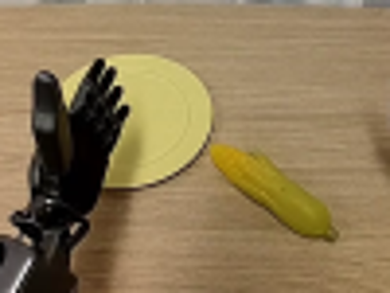
视觉工具实际返回图片 3
视觉工具实际返回图片 4
视觉工具实际返回图片 5
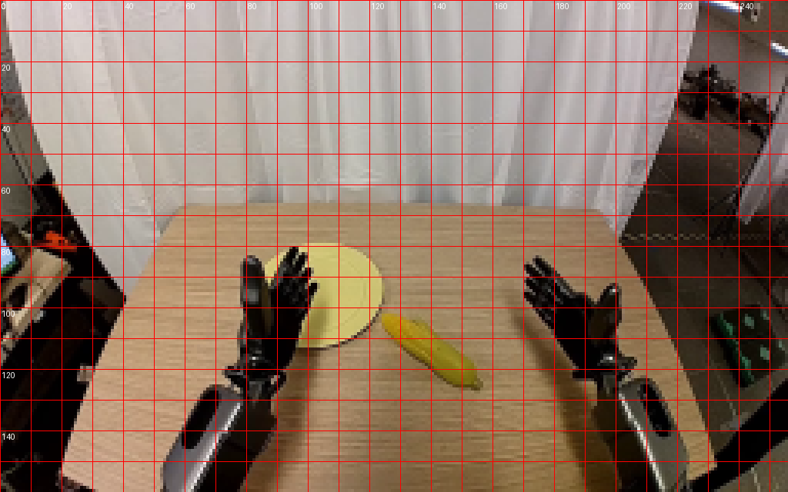
视觉工具实际返回图片 6
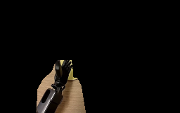
视觉工具实际返回图片 7
视觉工具实际返回图片 8
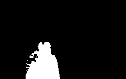
视觉工具实际返回图片 9
视觉工具实际返回图片 10
视觉工具实际返回图片 11
视觉工具实际返回图片 12
视觉工具实际返回图片 13
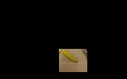
视觉工具实际返回图片 14
视觉工具实际返回图片 15
视觉工具实际返回图片 16
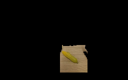
视觉工具实际返回图片 17
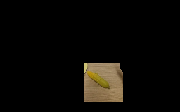
视觉工具实际返回图片 18
视觉工具实际返回图片 19
视觉工具实际返回图片 20
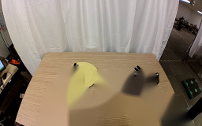
视觉工具实际返回图片 21

视觉工具实际返回图片 22
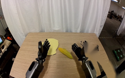
视觉工具实际返回图片 23
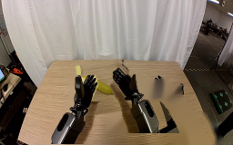
视觉工具实际返回图片 24
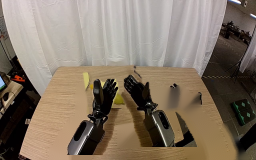
视觉工具实际返回图片 25
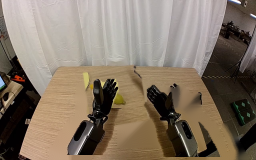
视觉工具实际返回图片 26
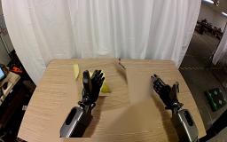
视觉工具实际返回图片 27
视觉工具实际返回图片 28
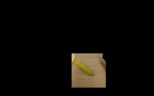
视觉工具实际返回图片 29
视觉工具实际返回图片 30
视觉工具实际返回图片 31

视觉工具实际返回图片 32
视觉工具实际返回图片 33
视觉工具实际返回图片 34
视觉工具实际返回图片 35
视觉工具实际返回图片 36
视觉工具实际返回图片 37
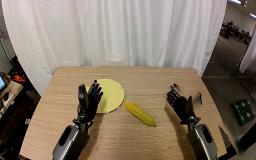
视觉工具实际返回图片 38
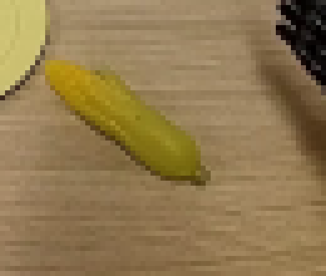
视觉工具实际返回图片 39
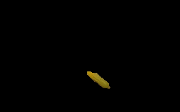
视觉工具实际返回图片 40
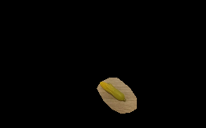
视觉工具实际返回图片 41
视觉工具实际返回图片 42
视觉工具实际返回图片 43
视觉工具实际返回图片 44
视觉工具实际返回图片 45
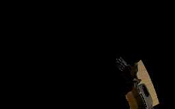
视觉工具实际返回图片 46
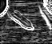
视觉工具实际返回图片 47
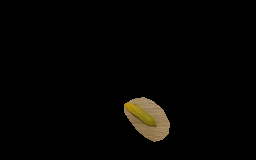
视觉工具实际返回图片 48
视觉工具实际返回图片 49
视觉工具实际返回图片 50
视觉工具实际返回图片 51
视觉工具实际返回图片 52
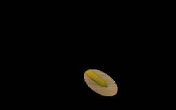
视觉工具实际返回图片 53
视觉工具实际返回图片 54
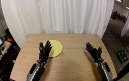
视觉工具实际返回图片 55
视觉工具实际返回图片 56
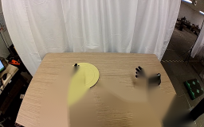
视觉工具实际返回图片 57
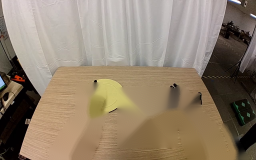
视觉工具实际返回图片 58
视觉工具实际返回图片 59
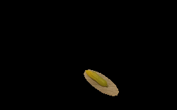
视觉工具实际返回图片 60
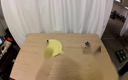
视觉工具实际返回图片 61

视觉工具实际返回图片 62
视觉工具实际返回图片 63

视觉工具实际返回图片 64
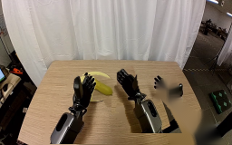
视觉工具实际返回图片 65
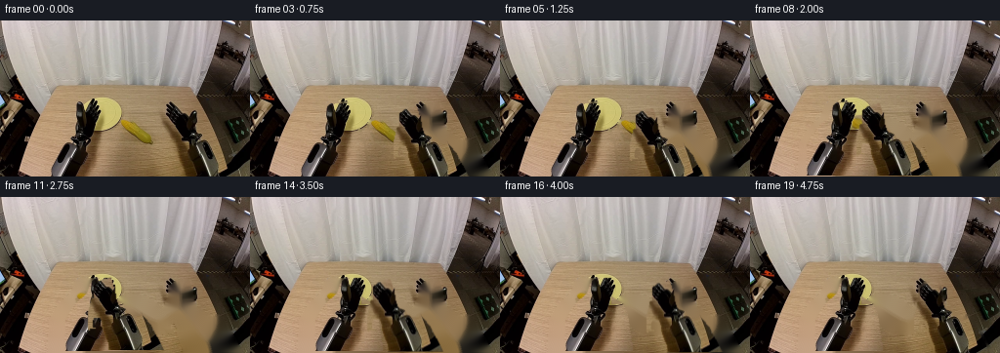
视觉工具实际返回图片 66
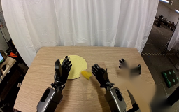
视觉工具实际返回图片 67
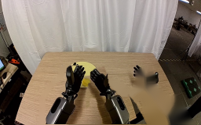
视觉工具实际返回图片 68
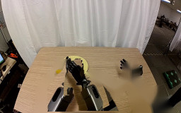
视觉工具实际返回图片 69
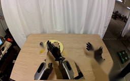
视觉工具实际返回图片 70
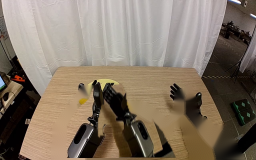
视觉工具实际返回图片 71
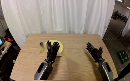
视觉工具实际返回图片 72
视觉工具实际返回图片 73
视觉工具实际返回图片 74
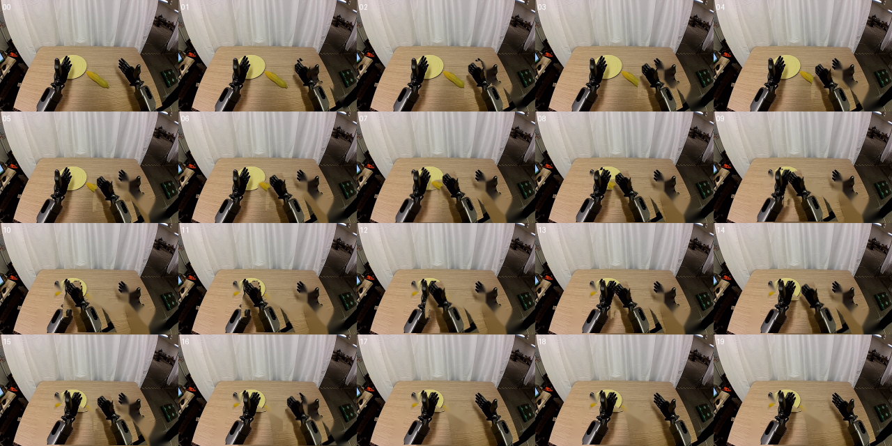
保存候选 5 份；完成命令 86 次；可验证图片返回 74 张。原始 API 响应与完整日志保留在本地。